게임 규칙 및 상세 시스템 (TETRIS Wiki)
1. 조작법 (Controls) ▼
| 입력키 | 동작 설명 |
|---|---|
| 방향키 (←, →) |
블록을 좌우로 이동시킵니다. ▼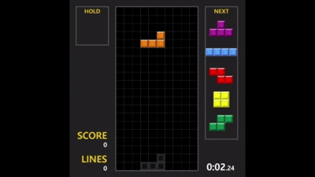 |
| 방향키 (↑) / Ctrl |
블록을 시계 / 반시계 방향으로 회전시킵니다. ▼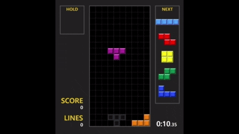 |
| Shift |
현재 블록을 HOLD 칸에 보관하거나 꺼냅니다. ▼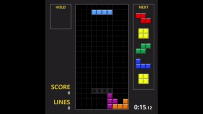 |
| 방향키 (↓) |
소프트 드롭 (블록을 빠르게 내립니다) ▼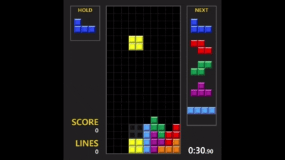 |
| Spacebar |
하드 드롭 (블록을 바닥에 즉시 꽂아 고정합니다) ▼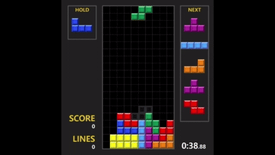 |
| ESC |
게임을 일시 정지합니다. ▼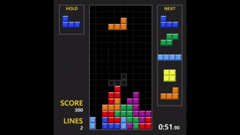 |
2. 블록 종류 (Tetrominoes) ▼
테트리스의 블록은 4개의 정사각형이 결합된 형태이며, 총 7가지 고유한 모양과 색상을 가집니다.
-
I 미노 (하늘색): 4칸이 일자로 연결된 블록. 테트리스(4줄 동시 제거)를 만들기 위한 핵심 블록입니다.
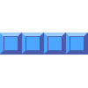
-
O 미노 (노란색): 2x2 정사각형 블록. 회전해도 모양이 변하지 않습니다.
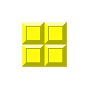
-
T 미노 (보라색): 'ㅜ' 모양 블록. 좁은 틈새를 파고드는 T-Spin 테크닉에 사용됩니다.
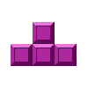
-
Z / S 미노 (빨강 / 초록): 지그재그 형태의 블록입니다.
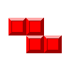
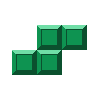
-
J / L 미노 (파랑 / 주황): 갈고리 형태의 블록입니다.
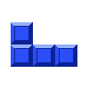
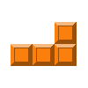
3. 월 킥 규칙 (Wall Kick & SRS) ▼
블록을 회전할 때 벽이나 바닥, 또는 다른 블록에 부딪혀 회전할 수 없는 경우, 시스템이 주변의 빈 공간을 탐색해 블록을 강제로 밀어 넣어주는 벽차기(Wall Kick) 기술을 지원합니다.
- 본 게임은 글로벌 테트리스 표준인 SRS(Super Rotation System)를 적용하고 있습니다.
- 회전 시 충돌이 감지되면, 알고리즘이 좌우 및 상하로 최대 5단계의 오프셋(Offset) 위치를 빠르게 계산하여 가장 먼저 들어갈 수 있는 빈틈으로 블록을 튕겨냅니다.
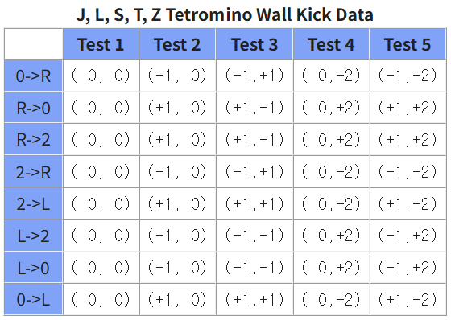
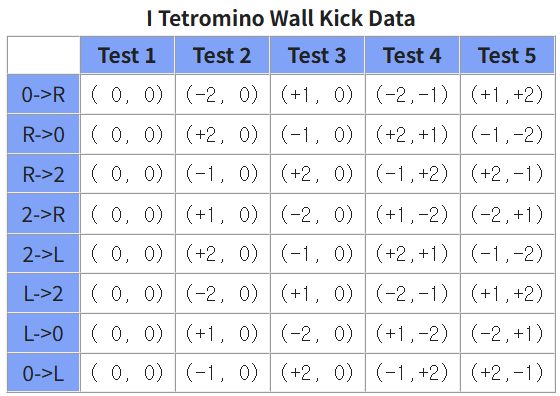
4. 홀드 (Hold) ▼
현재 떨어지고 있는 블록을 임시로 보관(Keep)할 수 있는 전략적 기능입니다.
- Shift 키를 누르면 현재 블록이 좌측 'HOLD' 패널로 들어가고, 다음 블록이 스폰됩니다.
- 홀드 패널에 이미 블록이 있다면, 현재 떨어지는 블록과 자리를 맞교환합니다.
- 무한 홀드를 통한 꼼수를 방지하기 위해, 한 번 떨어지는 블록당 홀드는 딱 1번만 사용할 수 있습니다. (블록이 바닥에 닿아 고정되면 횟수가 초기화됩니다.)
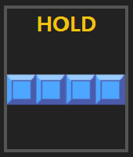

5. 하드드롭 및 소프트드롭 (Drop System) ▼
블록을 내리는 방식에는 두 가지가 존재하며, 상황에 맞게 활용할 수 있습니다.
-
소프트 드롭 (↓): 누르고 있는 동안 블록이 떨어지는 속도가 빨라집니다. 바닥에 닿더라도 즉시 굳지 않고 0.5초의 '락 딜레이(Lock Delay)' 유예 시간이 주어지므로, 바닥에서 미끄러지며 위치를 조정할 수 있습니다.
▲ 소프트드롭 -
하드 드롭 (Spacebar): 블록의 현재 X 좌표 수직선상 가장 낮은 바닥으로 블록을 순간 이동시키며 그 즉시 딜레이 없이 고정(Lock)시킵니다.
▲ 하드드롭
6. 고스트 블록 (Ghost Piece) ▼
현재 조작 중인 블록이 바닥에 떨어졌을 때 최종적으로 안착할 위치를 미리 보여주는 투명한 잔상입니다.
- 고스트를 활용하면 하드 드롭을 누르기 전에 실수로 블록을 잘못 놓는 오조작을 크게 줄일 수 있어 빠르고 안정적인 플레이가 가능합니다.
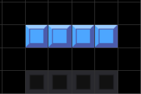
7. 가방 규칙 (7-Bag Randomizer) ▼
블록이 100% 무작위로 나오면 특정 블록(특히 I 미노)이 극단적으로 안 나오는 운 적인 요소가 게임을 지배할 수 있습니다. 이를 막기 위한 '보정 랜덤' 알고리즘입니다.
- 7종류의 블록 1세트가 가상의 '가방(Bag)' 안에 들어있습니다.
- 가방 안을 랜덤하게 섞은 뒤(Shuffle) 하나씩 꺼내어 플레이어에게 제공합니다.
- 가방을 다 비우면 다시 7개를 채워 넣고 섞습니다. 이 규칙 덕분에 최대 12턴 안에는 반드시 원하는 블록이 보장됩니다.